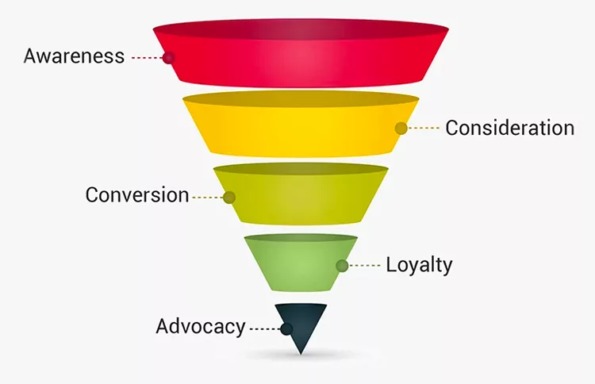

In this project I cleaned, explored and visualized Upwork Jobs data for the months of May, June and July using Python's Pandas and Seaborn libraries. This analysis was greatly helpful in understanding the Freelance job market.

This Dashboard keeps track of visitors on an E-Commerce website from the moment they land on the home page to becoming potential buyers.
In this Project , The world's layoff dataset was imported into MYSQL workbench and cleaned and standardized to be ready for analysis .
In this project, I created a streamlit dashboard to segment the customers of an online sales store using the Pandas , Plotly and Streamlit libraries in Python

In this project, I created a PowerBI dashboard which visualizes the detailed breakdown of Hirings made by the HR departemnt of an organization over the last 5 years.